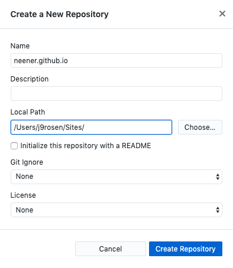

Core Lab:Interaction 2020
!--week 1 --! Intros
Organization, Naming Conventions
Terminal + GUI (graphical user interface) Demo
Create a 'Sites' folder (directory) in your 'User' folder and drag it into your sidebar in the 'Finder' for easy access
Your path should look like this : '/Users/j9rosen/Sites' where 'j9rosen' is my username
Inside the 'Sites' directory create another folder (subdirectory) called 'core-lab'
Inside the 'core-lab' folder make a folder called 'week-1'
Inside 'week-1' directory create a new file and call it index.html
So far you have created a path that looks like this : /Users/j9rosen/Sites/core-lab/week-1/index.html
***You will create a new folder in /Users/j9rosen/Sites/core-lab/ for each corresponding week we meet.***
Terminal Commands:
pwd - print working directoryls - list everything in the directorycd - change directorycd .. - navigate up one directorymkdir - make directorytouch - make new file
Emmet extension '!' ✨magic
*HTML Review*
Git, Github, Github Desktop, Github Pages
Repository or 'Repo':
- a digital directory or storage space where you can access your project, its files, and all the versions of its files that Git saves.
In Github Desktop click create a new repository

Name the repository your github username. My username is neener so my repository name is neener.github.io
The 'Local Path' should be directed to the file you made earlier Sites/
Click 'Create Repository'
We name our repo by our github username because we will utitilize to host our site.
TCP - T ransmission C ontrol P rotocol - a standard that defines how to establish and maintain a network conversation through which application programs can exchange data.
IP - I nternet P rotocol - TCP works with the Internet Protocol (IP), which defines how computers send packets of data to each other.FTP - F ile T ransfer P rotocol - a standard network protocol used for the transfer of computer files between a client and a server on a computer network.
History of how the internet was built in maps
How the internet looks under the ocean
HW week-1
Collect 6 receipts and translate them into 5 additional index.html pages in your Sites/core-lab/week-1 directory.
Experiment with new html tags ( use atleast 10 ), focus on heirarchy.
Take note of how different HTML elements interact with each other, ie. notice the padding and margins that come with each element, which elements create a new line break?
Take time to properly indent your code so it’s easy to read and easier to debug!
Push your work to Github (bonus)
Resources: